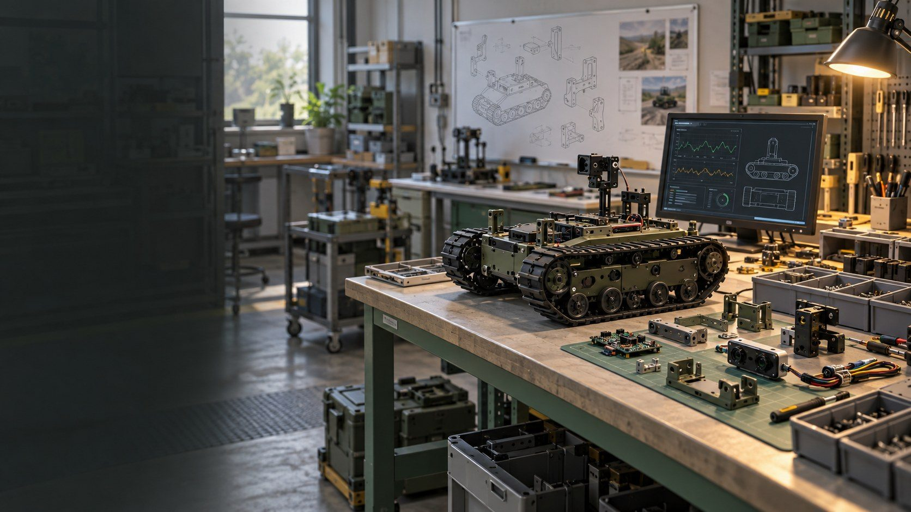
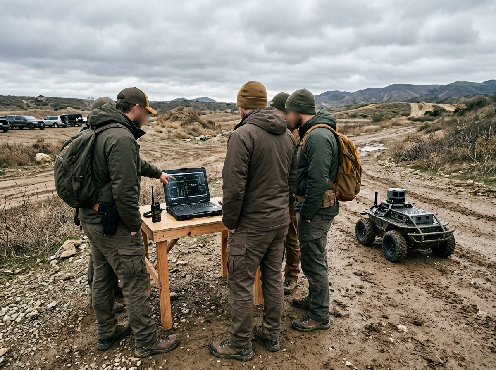
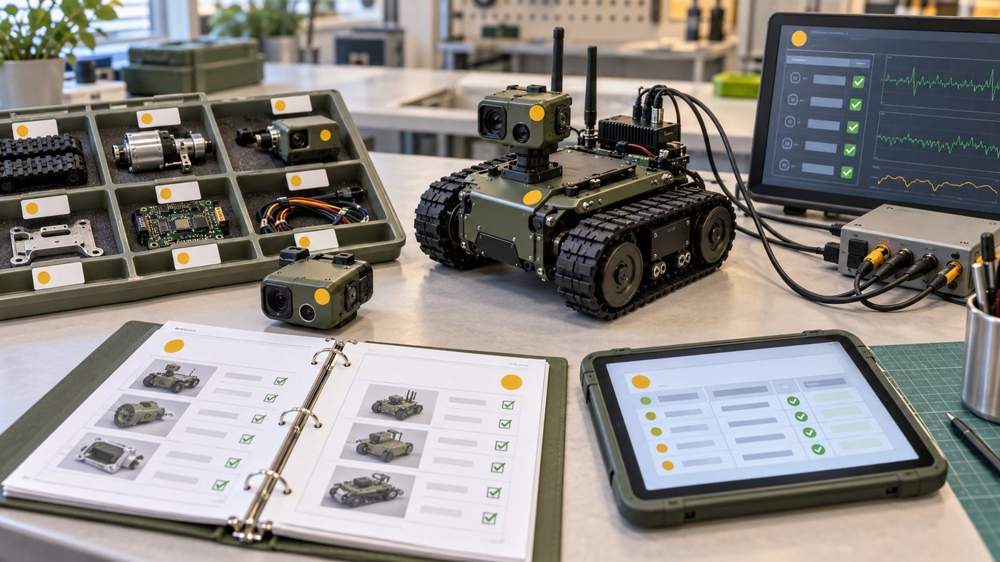
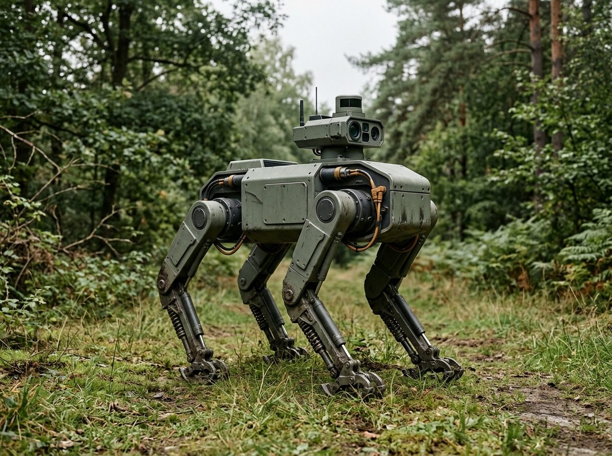
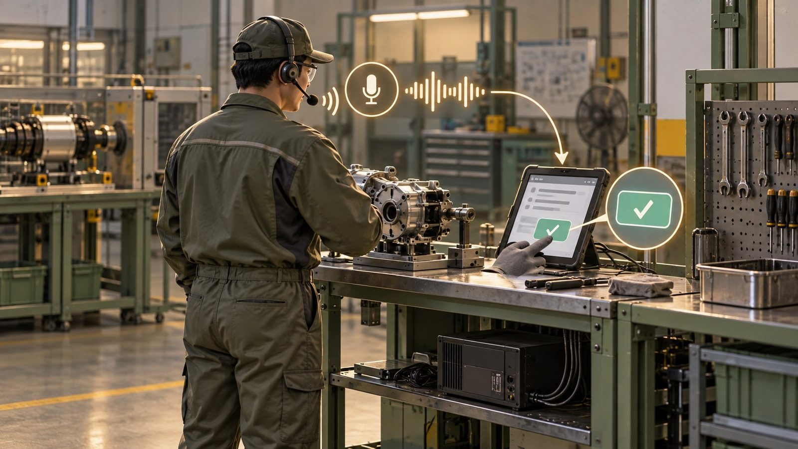

A4AI의
제조 진출 방안
현장 데이터로 시작하는 단계적 진입
2026.10.16
개념 이미지 (AI 생성)오늘 말씀드릴 순서흐름 → 조건 → 지원사업 → 기술·데이터 → 실행
01
현재 제조 흐름 분석정책·현장·데이터·구미의 흐름
02
진입 조건과 경로출발점, 단계적 진입, 공장등록의 의미
03
지원사업 재검토걸러진 이유, 과제 중복 대조, 신청 후보
04
AI 기술·데이터 활용현장 음성 작업기록과 VCM
05
시작 준비와 실행 계획준비사항, 10월 계획, 6개월 일정

개념 이미지 (AI 생성)A4AI 기획 보고 · A4AI의 제조 진출 방안
한눈에 보기세 가지로 요약드립니다
출처: 회사 제공 자료·현황 (2026.10.16 확인, 원문 비공개) · 기업마당·기관 공고문과 첨부 원문 (2026.10.15~16 확인) · 회사 현황과 공고 조건을 바탕으로 한 기획안
A4AI 기획 보고 · 요약

01
현재 제조 흐름 분석
정책은 제조 AI로, 현장은 아직 데이터를 모으는 단계
정책은 '제조 AI'로 옮겨 가고 있습니다예산과 사업이 설비 보급에서 AI·데이터 활용으로
핵심지원 예산이 'AI를 실제 현장에 쓰는 일'로 이동 — 공급 기술보다 현장 적용 사례가 중요해짐
출처: 뉴시스 2025.9.1 「산업부, 내년 예산 22% 늘어난 13.9조 편성」 (정부안) · 헬로티 2025.10.30 「중기부, AI 기반 스마트공장 450개 구축 지원」 · 파이낸셜뉴스 2025.10.24
AX AI 전환 — 업무에 AI를 들여 일하는 방식을 바꾸는 것
피지컬 AI 로봇·기계처럼 현실에서 움직이는 장치에 들어가는 AI
A4AI 기획 보고 · 01 현재 제조 흐름 분석
현장은 아직 기초 단계이고, 고령화되고 있습니다스마트공장 도입 기업의 4분의 3이 기초 수준
출처: 디지털데일리 2025.4.28 「중기부 "스마트공장 도입 기업 19.5%에 불과"」 · Korea JoongAng Daily 2025.11.18 (대한상의 제조기업 504곳 조사) · 헤럴드경제 2026.6.20 (국가데이터처 자료)
기초 수준 스마트공장 생산 정보를 시스템에 모으기 시작한 첫 단계 — 분석·자동 제어 전 단계
A4AI 기획 보고 · 01 현재 제조 흐름 분석
병목은 '기록'과 '데이터'입니다현장 기록이 손과 종이에 머물러 데이터가 되지 못하고 있습니다
출처: 뉴스토마토 2026.9.22 (중기부 연구의 2024 스마트제조 실태조사 재인용) · SupplyChain247 2026.6.16 (L2L 미국 제조 리더 조사) · MDPI Multimodal Technologies and Interaction 8(2):8, 2024
WER 받아쓰기에서 틀린 단어의 비율
dB(A) 사람 귀에 맞춘 소리 크기 단위 — 85 dB(A)는 하루 8시간 노출 상한
A4AI 기획 보고 · 01 현재 제조 흐름 분석
구미에 로봇 부품·제조 AI 실증 수요가 모이고 있습니다특화단지·실증산단·AX 사업·방산 클러스터가 같은 지역에
출처: 경북매일 2026.9.30·2026.7.12, 영남경제 2026.7.22, 청소년의회 2026.7.1
AX 실증산단 산업단지 기업에 AI 솔루션·데이터를 실제로 적용해 보는 사업
유·무인복합체계 사람이 탄 장비와 드론·무인차량이 함께 운용되는 체계
A4AI 기획 보고 · 01 현재 제조 흐름 분석
02
진입 조건과 경로
제조 기반이 없는 지금, 어디서부터 들어갈 것인가
출발점: 제조 기반은 없고, AI와 데이터는 있습니다그래서 설비·생산으로 바로 진출하기는 어렵습니다
출처: 회사 제공 자료·현황 (2026.10.16 확인, 원문 비공개)
Edge AI 서버가 아닌 현장 장비 안에서 바로 돌아가는 AI
온프레미스 인터넷 밖, 회사 안 서버에서 처리하는 방식
A4AI 기획 보고 · 02 진입 조건과 경로
단계적 진입: 데이터·SW → 협력 제작 → 자체 제조지금은 1단계 — 다음 단계는 앞 단계 결과가 쌓인 뒤 판단
출처: 회사 현황과 공고 조건을 바탕으로 한 기획안
공인 시험기관 제품 성능·안전을 시험해 공식 성적서를 내 주는 기관
A4AI 기획 보고 · 02 진입 조건과 경로
공장등록은 출발 신호 — 자격 전부는 아닙니다등록으로 열리는 문과 여전히 닫힌 문
핵심공장등록은 중요한 전환점이지만, 신청 가능 여부는 공고마다 실적·지역·재무·과제 중복으로 다시 판단
출처: 기업마당·기관 공고문과 첨부 원문 (2026.10.15~16 확인) · 회사 제공 자료·현황 (2026.10.16 확인, 원문 비공개)
공장등록 「산업집적활성화 및 공장설립에 관한 법률」에 따라 제조시설을 지자체에 등록하는 절차
도입기업 정부 지원으로 기술·설비를 들여오는 기업 — 반대는 공급기업
A4AI 기획 보고 · 02 진입 조건과 경로

03
지원사업 재검토
진행 중인 과제와 겹치지 않는 공고만 다시 골랐습니다
공고는 이렇게 걸렀고, 주로 이런 이유로 빠졌습니다수집 2,785건 → 원문 대조 38건 → 접수 중 신청 후보 11건
기준10.16 기준 마감 7일 이하(10.23까지)는 준비 기간 부족으로 제외 — 그중 관련 공고 6건은 다음 차수 대비 목록으로
출처: 기업마당·기관 공고문과 첨부 원문 (2026.10.15~16 확인)
원문 대조 공고 본문과 첨부(HWP·PDF·ZIP)를 모두 열어 자격 조항을 직접 확인한 것
A4AI 기획 보고 · 03 지원사업 재검토
접수 중 신청 후보 11건 — 주관기관과 과제 중복 대조바로 가능 5 · 범위를 나누면 가능 4 · 기관 문의·주제 제한 2
출처: 기업마당·기관 공고문과 첨부 원문 (2026.10.15~16 확인) · 회사 제공 VCM·UGV·RISE 계획서, K-방산 1단계 신청서 (원문 비공개)
간접지원 회사에 현금을 주지 않고 비용을 전문가·수행기관에 지급하는 방식
TIPS 민간 투자사가 먼저 투자하면 정부가 R&D 자금을 더해 주는 제도
A4AI 기획 보고 · 03 지원사업 재검토
진행·신청 과제 4건과 겹치지 않게 — 대조 기준같은 제품·같은 내용·같은 비용은 다시 신청하지 않습니다
출처: 회사 제공 VCM·UGV·RISE 계획서, K-방산 1단계 신청서 (원문 비공개)
중복 지원 같은 제품·같은 내용으로 여러 정부 사업에서 비용을 받는 것 — 공고마다 제외·환수 사유
A4AI 기획 보고 · 03 지원사업 재검토
방산·모빌리티 스마트공장은 제외 — 다른 공고를 기준으로납품내역서·거래확인서가 없어 신청 불가, 조건부 공고는 갖출 것별로
출처: 기업마당·기관 공고문과 첨부 원문 (2026.10.15~16 확인)
조건부 지금은 부족하지만 정해진 조건(파트너·증빙·승인 등)을 갖추면 신청 가능한 공고
A4AI 기획 보고 · 03 지원사업 재검토
정기 공고 달력: 다음 6개월1월(R&D·방산)과 3월(바우처·AX)에 몰립니다 — 11~12월이 준비 기간
출처: 2026년 각 기관 실제 공고·접수일 (기업마당·기관 게시판·보도), 2027년은 미확정
AI바우처 정부가 AI 솔루션 도입 비용을 지원하는 사업
창업도약패키지 업력 3~7년 기업 대상 — A4AI는 2027.1.15부터 해당
A4AI 기획 보고 · 03 지원사업 재검토

04
AI 기술·데이터 활용
이미 가진 기술과 소음·발화 데이터를 현장 기록으로
우리가 가진 AI 기술과 데이터소음 속 음성을 회사 안에서 처리하고, 데이터로 쌓을 수 있는 기반
출처: 회사 제공 자료·현황 (2026.10.16 확인, 원문 비공개) · 회사 제공 VCM·UGV·RISE 계획서, K-방산 1단계 신청서 (원문 비공개)
STT 음성을 글자로 바꾸는 기술
SNR 신호 대 잡음비 — 소리에서 말과 소음의 크기 비율
A4AI 기획 보고 · 04 AI 기술·데이터 활용
현장 음성 작업기록 — 핵심은 데이터 재활용입니다STT 성능 경쟁이 아니라, 한 번 남긴 기록이 여러 업무에 다시 쓰이는 구조
출처: 회사 현황과 공고 조건을 바탕으로 한 기획안
인수인계 교대·담당 변경 때 작업 상황과 주의점을 다음 사람에게 넘기는 것
구조화 자유로운 말을 작업·설비·결과 같은 정해진 칸으로 정리하는 것
A4AI 기획 보고 · 04 AI 기술·데이터 활용
VCM 과제와 같은 방향입니다같은 문제·같은 데이터·같은 로드맵 — 단, 신규 지원과는 선을 긋습니다
출처: 회사 제공 VCM·UGV·RISE 계획서, K-방산 1단계 신청서 (원문 비공개)
VCM (VoiceClear-M) 군용 무전기용 AI 소음감쇄·음성향상 칩 모듈 과제 — 2026.05~12
민수 군이 아닌 민간 시장
A4AI 기획 보고 · 04 AI 기술·데이터 활용
05
시작 준비와 실행 계획
10월은 공장등록 후 계획 준비부터
시작하기 위한 준비사항제조 기반이 없는 지금 조건에 맞춘 네 가지 준비
출처: 회사 현황과 공고 조건을 바탕으로 한 기획안
참여율 한 사람이 정부 과제에 투입하는 시간 비율 — 과제끼리 합쳐 100%를 넘을 수 없음
A4AI 기획 보고 · 05 시작 준비와 실행 계획
10월: 공장등록 후 계획 준비등록을 마무리하고, 신청과 시범에 필요한 문서를 갖춥니다
출처: 회사 현황과 공고 조건을 바탕으로 한 기획안
A4AI 기획 보고 · 05 시작 준비와 실행 계획
6개월 실행 계획10월 계획 → 11월 협의·신청 → 12월 작은 시범 → 1~3월 정리·확대 판단
출처: 회사 현황과 공고 조건을 바탕으로 한 기획안 · 2026년 각 기관 실제 공고·접수일 (기업마당·기관 게시판·보도), 2027년은 미확정
A4AI 기획 보고 · 05 시작 준비와 실행 계획
최종 결론제조 진입의 첫 단계는 현장 데이터 — 설비는 그다음입니다
정리있는 것(AI·데이터)으로 먼저 들어가고, 없는 것(설비·실적)은 협력과 지원으로 단계적으로 채웁니다
출처: 회사 제공 자료·현황 (2026.10.16 확인, 원문 비공개) · 회사 제공 VCM·UGV·RISE 계획서, K-방산 1단계 신청서 (원문 비공개) · 회사 현황과 공고 조건을 바탕으로 한 기획안
A4AI 기획 보고 · A4AI의 제조 진출 방안
질의응답
제조 진출 방향과 준비 범위
부록 A · 판정 기준과 걸러 낸 과정회사 조건과 판정 규칙
| 항목 | 내용 |
|---|---|
| 회사 조건 | 2024.1.15 설립(업력 2년 9개월), 경북 구미, 상시근로자 10~29명, 벤처기업·기업부설연구소, 공장등록 진행 중 |
| 판정 | 가능(지금 자격 충족) / 조건부(조건을 갖추면 가능) / 확인 필요(기관 문의) / 불가 |
| 7일 규칙 | 10.16 기준 마감 7일 이하(10.23까지)는 준비 불가로 보고 제외 → 다음 차수 목록 |
| 과제 중복 | VCM·UGV·RISE·K-방산 1단계의 범위·기간·비용과 공고별 중복 제한 조항을 대조 |
| 근거 | 기업마당 상세와 첨부(HWP·HWPX·PDF·ZIP)를 텍스트로 바꿔 대조, 조항·쪽수 기록 |
출처: 기업마당·기관 공고문과 첨부 원문 (2026.10.15~16 확인) · 회사 제공 자료·현황 (2026.10.16 확인, 원문 비공개)
A4AI 기획 보고 · 보충자료
부록 B · 접수 중 후보 11건의 자격 근거공고문 지원대상 조항과 중복 관련 조항
| 공고 (주관·수행) | 자격 근거 | 중복·제한 조항 |
|---|---|---|
| 상생형 창업·벤처 (한국도로공사) | 창업 7년 이내 또는 벤처기업, 드론·자율주행 분야 포함 | 같은 품목 정부 지원 여부 확인 — UGV·RISE와 다른 품목 |
| 빅웨이브 IR (인천창조경제혁신센터) | 7년 이내 초격차 분야 법인(로봇·AI) | 투자 연계 — 사업비 지원 아님 |
| 기업애로 원스톱 (구미전자정보기술원) | 구미 사업장 가동 중소·중견기업 | '유사정책자금으로 사업수행 중이거나 받을 예정 기업' 제외 |
| 민·군규격표준화 (국방기술품질원) | 산·학·연 과제 제안 | 정부 R&D로 기 지원된 과제는 검토 제외 |
| 구미 스타트업 제작센터 (구미전자정보기술원) | 업력 7년 이내, 구미 소재 (원문 재확인) | 과제 시제품과 다른 품목만 |
| 실외이동로봇 기술지원 (한국로봇산업진흥원) | 실외이동로봇 관련 국내 기업 | 서면평가로 중복성 검토, 인증 수검 중 모델 제외 |
| 온디바이스 AI 애로기술 (한국로봇융합연구원) | 지능형로봇·첨단제조장비 등 관련 중소·중견 | 최근 2년 동일제품·동일내용 지원은 중복 |
| 공유공장 시험검사 (FITI시험연구원) | 업력 5년 이내 제조창업기업 또는 중소기업, 타지역 가능 | 과제 예산의 시험 항목과 구분 |
| AI데이터센터 테스트베드 (포항테크노파크) | 전국 IT·SW·데이터센터 기업 | 현금 지원 아님 |
| 방산혁신클러스터 판로개척 (구미) | 경북·구미 방산 기업 (원문 재확인) | 같은 전시회 비용 이중 청구 금지 |
| 연구장비 임대 (한국로봇산업진흥원) | 중소·중견, 장비 전문인력 보유·채용 예정 | 유료 임대 |
출처: 기업마당·기관 공고문과 첨부 원문 (2026.10.15~16 확인)
A4AI 기획 보고 · 보충자료
부록 C · 조건부 13건 — 갖춰야 할 것대부분 10~11월 마감, 문의·파트너 확보가 먼저
| 마감 | 공고 (주관) | 갖춰야 할 조건 |
|---|---|---|
| 10.27 | 차세대 항공 기체부품 (부산TP) | 드론 부품이 항공 기체부품으로 인정되는지 확인, 현금 10% |
| 10.29 | KST 딥테크 투자 (한국과학기술지주) | 출연(연) 기술 실시권 확보 또는 기술 매칭 |
| 10.29 | 대구 제조데이터 컨설팅 (대구TP) | 공급기업 Pool 등록, 최근 3년 구축 실적 |
| 10.30 | Multi AI Agent 수요기업 (TIPA) | 공장등록증명 + 자격 있는 공급 주관기관 |
| 10.31 | 혁신제품 지정 컨설팅 (한국남부발전) | 산업부 R&D 제품 또는 성능인증 등 인증 제품 |
| 11.12 | 지역거점 AX R&D (대구디지털혁신진흥원) | 대구 주관기관 + 공동기관 참여, 민간부담 25% |
| 11.13 | 한계돌파 R&D (한국연구재단) | 대학·출연연 컨소시엄과 연구책임자 |
| 11.13 | 해외규격인증 (KTR) | 수출 제품과 필요 인증이 정해져 있을 것 |
| 11.30 | 국방기술 민간이전 (경북TP) | 방사청 기술이전 승인, 이전 기술 선정 |
| 11.30 | 경량소재 장비 사용료 (경북TP) | 가공 장비가 필요한 부품 시제품 |
| 11.30 | 개방형혁신 장비 (경북TP) | 사업장이 지정 구역 안일 것 |
| 12.18 | 엔드이펙터 시험 (KTL) | 그리퍼 등 말단장치 품목 |
| 수시 | 제조DX멘토단 (지역 TP) | 공장 가동 후 공정 수요, 경북 잔여 예산 |
출처: 기업마당·기관 공고문과 첨부 원문 (2026.10.15~16 확인)
A4AI 기획 보고 · 보충자료
부록 D · 불가 10건과 7일 규칙 제외원문 대조 후 불가 판정과 다음 차수 대비
| 구분 | 공고 | 이유 |
|---|---|---|
| 증빙 | 방산·모빌리티 스마트공장 (경북TP) | '24~'25 납품내역서·거래확인서 필수, 3개년 재무제표 |
| 이력 | Multi AI Agent 주관 (TIPA) | 선행 스마트제조 R&D 완료 기관만 |
| 지역 | 경북형 스마트공장 2차 · 포항 3차 | 남은 자리 안동·김천 / 포항 소재 |
| 지역 | 대구 기술닥터 · 대전 3D프린팅 · 대구 AI로봇 | 대구·대전 소재 요건 |
| 기간 | 대경 이음 R&D · GERI 반도체 시제품 | 지원기간 종료 / 접수 종료 → 2027 대비 |
| 제품 | 물류 서비스로봇 시험 (KTL) | 물류로봇 제품 없음 |
| 7일 | GERI 온디바이스 기술지도 (10.16) | 오늘 마감 — 다음 차수 |
| 7일 | 방산 중소기업 컨설팅 (10.19) | 2027년 1차(작년 4월) 대비 |
| 7일 | K-AI 경북형 동반성장 (10.23) | 앵커 중견기업 확보 후 2027 대비 |
출처: 기업마당·기관 공고문과 첨부 원문 (2026.10.15~16 확인)
A4AI 기획 보고 · 보충자료
부록 E · 진행 과제 범위와 신규 업무 구분협약서·세부 예산으로 최종 확인 전 기획 기준
| 과제 | 진행 범위 (원문) | 신규 지원에서 할 수 있는 일 |
|---|---|---|
| VCM | DSP 펌웨어 v1.0, AI 음성향상 엔진 프로토타입, 무전기 연동 실증 (26.05~12) | 제조 작업 양식·용어 사전, 공장 소음 데이터 수집·현장 검증 |
| UGV | 야지 경로판단 검증용 SW, UGV 시험 (26.06~27.06) | 경로판단과 무관한 품목·시험 |
| RISE | 온디바이스 AI 자율순찰 로봇 통합·실증 (26.04~12, 공동) | 순찰 로봇과 다른 제품의 시험 |
| K-방산 1단계 | 전장 음성 STT·보정·7개 필드 구조화·승인·DB 서버 (26.07~12, 신청) | 구조화 기능 개발 제외, 제조 현장 적용·검증만 |
| 완료·준비 | 전주기 방산 창업, RISE 드론·LiDAR SLAM, 초기창업패키지, 민군기술이전 스핀오프 준비 | 과거 지원 이력은 공고별 동일제품 제한에 포함 검토 |
출처: 회사 제공 VCM·UGV·RISE 계획서, K-방산 1단계 신청서 (원문 비공개)
A4AI 기획 보고 · 보충자료
부록 F · 숫자와 출처제조 흐름 분석에 쓴 수치
| 수치 | 출처 |
|---|---|
| 산업 AX 4,561억→1조 1,347억, 피지컬 AI 2,149억→4,022억, AI 팩토리 2,200억 (정부안) | 뉴시스 2025.9.1 「산업부, 내년 예산 22% 늘어난 13.9조 편성」 (정부안) |
| AI 기반 스마트공장 과제 약 450개, 2030 중소 AI 도입률 1%→10% | 헬로티 2025.10.30 「중기부, AI 기반 스마트공장 450개 구축 지원」 · 파이낸셜뉴스 2025.10.24 |
| 스마트공장 도입 19.5%, 도입 기업 75.5% 기초 수준 | 디지털데일리 2025.4.28 「중기부 "스마트공장 도입 기업 19.5%에 불과"」 |
| 중소·중견 제조 AI 활용 4.2% (대기업 49.2%) | Korea JoongAng Daily 2025.11.18 (대한상의 제조기업 504곳 조사) |
| 제조업 50세 이상 35.2% (2025 4분기) | 헤럴드경제 2026.6.20 (국가데이터처 자료) |
| 제조 데이터 수기 입력 75.7%, 실시간 19.7% | 뉴스토마토 2026.9.22 (중기부 연구의 2024 스마트제조 실태조사 재인용) |
| 감독자 65% 교대당 최대 4시간 수작업 데이터 | SupplyChain247 2026.6.16 (L2L 미국 제조 리더 조사) |
| 87 dB(A) WER 37% (스튜디오 실험, 22명) | MDPI Multimodal Technologies and Interaction 8(2):8, 2024 |
| 로봇 특화단지·AX 실증산단 245.9억·13개 AX 관련 사업 1,989억 원 규모·방산혁신클러스터 499억 | 경북매일 2026.9.30·2026.7.12, 영남경제 2026.7.22, 청소년의회 2026.7.1 |
출처: 회사 현황과 공고 조건을 바탕으로 한 기획안
A4AI 기획 보고 · 보충자료